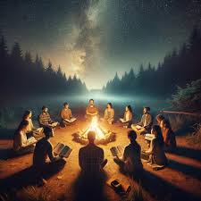
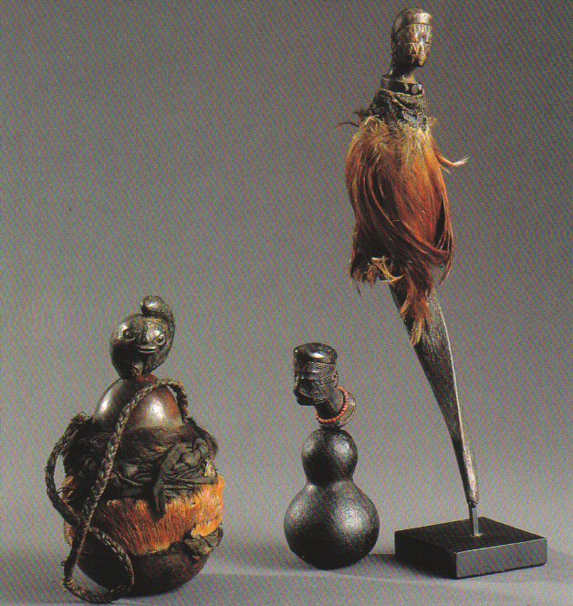
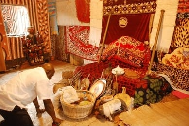

SERVICES
Bring back lost lover
Every relationship has its unique story filled with moments of joy and challenges. When separation occurs, it can bring immense emotional distress. Baba Alie, with extensive knowledge and offers a compassionate and effective approach to mend these broken bonds.

Blessings to bind curses
Powerful blessings create an impenetrable barrier around you, safeguarding your mind, body, and spirit from all forms of negativity. cleansing your aura and environment, Baba Alie helps restore balance and positivity in your life.

Spiritual cleansing
Spiritual cleansing rituals effectively remove lingering negative energies that may be affecting your well-being. To remove curses and bad spirits that trouble you from your life, it could be from your house. And also if you are looking for Blessings and success in your works

Enhancement
Want to become famous and popular and Feel more confident and self-assured in all aspects of life with enhanced vitality and strength. Experience improved energy levels and stamina, contributing to better physical performance and endurance.

Business Boost
Want to make more sells, attract more customers in your business and clear negative energies that may be hindering your business's growth, Implement protective measures to safeguard your business from harm, bad luck, and financial loss.
Manhood enlargment
Lacking confidence in your Manhood size can not only impact self-esteem levels, but may also impact confidence in the bedroom and with relationships in general. With Baba Alie's natural and mighty powers this will be a story of the past.
Relationships
Fix your marriage, relationships, solve marital problems & construct a robust marriage using marriage spells. Marriage spells will trade your love when it comes to marriage. My love spells are cast to make you the better version of yourself, attracting even those you saw as out of your league, re-attracting your ex-lover, and making them regret leaving you.
Divorce Spells
Facing the heartbreak of a potential divorce or seeking to strengthen the bonds of your partnership. Are you also seeking a divorce and looing for a path of peace, I'm your go to solution as well. Experience the transformative power of Baba Alie's relationship solutions and let his supernatural abilities guide you through the complexities of love
.jpeg)
Financial Blessings
I offer powerful blessings and spiritual interventions designed to bring financial, success, and prosperity into your life. Whether you're hoping to win the lottery, seeking relief from financial problems, or aiming for a job promotion, My supernatural powers provide a pathway to abundance